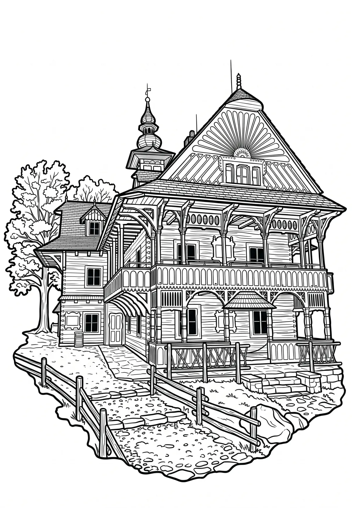

Pustevny
Pustevny (1018 m n. m.) je sedlo v Moravskoslezských Beskydech nedaleko Radhoště, které patří k obci Prostřední Bečva (okres Vsetín). Bylo pojmenováno po poustevnících, kteří zde žili do roku 1874. Pro Pustevny jsou typické dřevěné stavby postavené v lidovém slohu koncem 19.
Více na Wikipedii